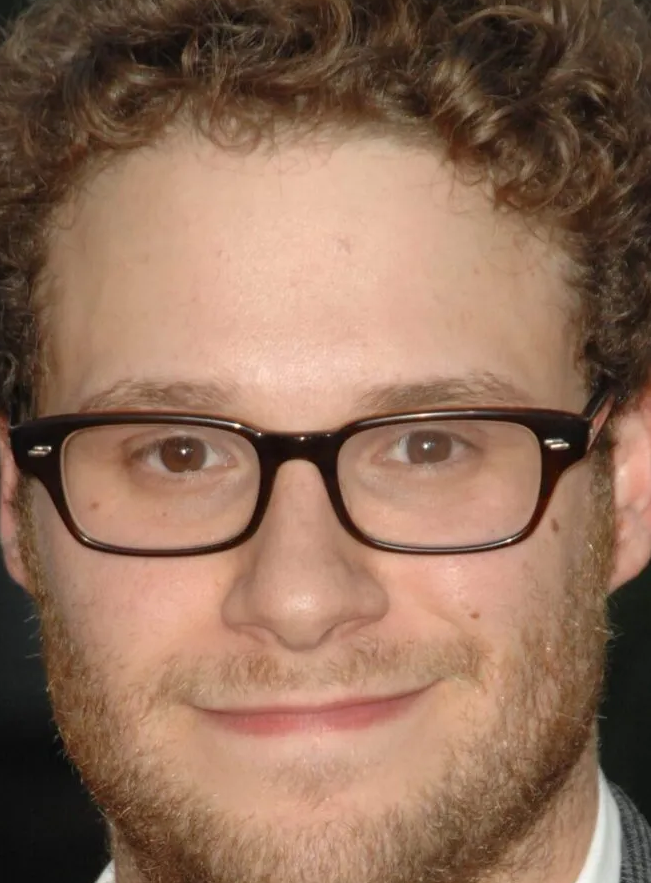

Curriculum Vitae

Kirjeldus
Olen mitmekülgne näitleja, stsenarist, produtsent ja lavastaja, kelle töö ühendab tugevad komöödiaskused ja loomuliku ekraanikarismaga esinemise. Olen kirjutanud ja produtseerinud mitmeid menukaid filme, sealhulgas Superbad, Pineapple Express ja This Is the End. Lisaks komöödiatele olen tõestanud oma võimekust ka draamarollides, näiteks filmides Steve Jobs ja The Fabelmans. Lavastajana olen aidanud luua kõrge hinnanguga projekte, sealhulgas sarja The Boys produktsioonifirma kaudu. Olen tuntud professionaalsuse, tugeva tööeetika ja koostööd soosiva töökeskkonna loomise poolest.
Oskused
Töökogemus
-
Filmilavastaja – Pineapple Productions
(2018–Praeguseni) -
Stsenarist – Laughline Studios
(2014–2018) -
Produtsent – Northbound Films
(2010–2014) -
Häälnäitleja – Global Animation Network
(2008–2010) -
Näitleja – Evergreen Entertainment
(2005–2008)
Kvalifikatsioonid
- Suurepärased stsenaristikogemused
- Kogenud loovjuht
- Lai kogemus kaamera ees
- Tugevad suhtlemisoskused